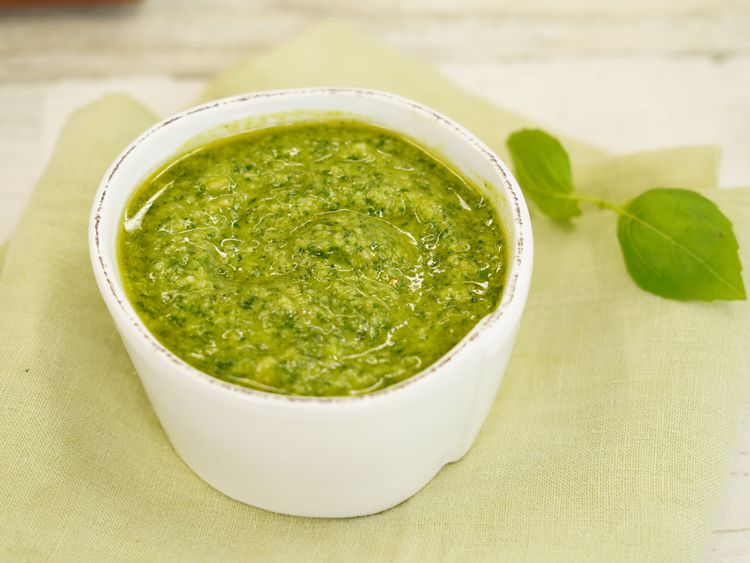

Return to main page
Cookies

Description
Basic pesto made with basil, olive oil, pine nuts, and Parmesan cheese. This recipe differs from the classic preparation by the addition of parsley. You can add a little extra Parmesan to the mixture if you like.
Ingredients:
- 3 cups packed fresh basil leaves
- ¾ cup grated Parmesan cheese
- ½ cup olive oil
- ¼ cup pine nuts
- 4 cloves garlic, or to taste
- 2 teaspoons lemon juice, or more to taste (optional)
Directions
- Combine basil, Parmesan cheese, olive oil, pine nuts, and garlic in the bowl of a food processor or blender. Blend to a smooth paste. Add lemon juice, if desired, and quickly pulse to combine.